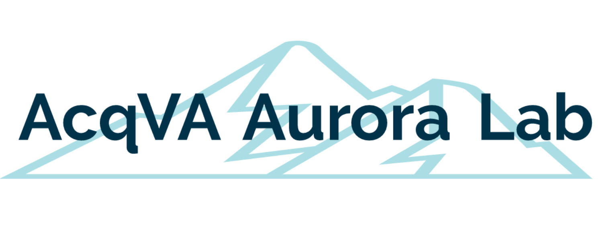

# set options
options(stringsAsFactors = F) # no automatic data transformation
options("scipen" = 100, "digits" = 4) # suppress math annotation
# install packages
install.packages("tidyverse")
install.packages("flextable")
# install klippy for copy-to-clipboard button in code chunks
install.packages("remotes")
remotes::install_github("rlesur/klippy")RESOURCES
Links to Relevant Resources
This page contains links to resources relevant for language technology, text analytics, data management and reproducibility, language data science and natural language processing.
ATAP
LADAL is part of the Australian Text Analytics Platform (ATAP). The aim of ATAP is to provide researchers with a Notebook environment – in other words a tool set - that is more powerful and customisable than standard packages, while being accessible to a large number of researchers who do not have strong coding skills.
Tools
AntConc (and other Ant tools)
AntConc is a freeware corpus analysis toolkit for concordancing and text analysis developed by Laurence Anthony. In addition to AntConc, Laurence Anthony’s AntLab contains a conglomeration of extremely useful and very user-friendly software tools, that help and facilitate the analysis of textual data. Laurence has really developed an impressive, very user-friendly selection of tools that assist anyone interested in working with language data.
SMARTool
SMARTool is a corpus-based language learning and analysis tool for for English-speaking learners of Russian. It is linguist-built and thus informed by modern linguistic theory. SMARTool assists learners with coping with the rich Russian morphology and has user-friendly, corpus-based information and help for learning the most frequent forms of 3,000 basic vocabulary items.
Courses
Applied Language Technology
Applied Language Technology is a website hosting learning materials for two courses taught at the University of Helsinki: Working with Text in Python and Natural Language Processing for Linguists. Together, these two courses provide an introduction to applied language technology for audiences who are unfamiliar with language technology and programming. The learning materials assume no previous knowledge of the Python programming language.
Cultural Analytics with Python
Introduction to Cultural Analytics & Python is a website established by Melanie Walsh that hosts an online textbook which offers an introduction to the programming language Python that is specifically designed for people interested in the humanities and social sciences.
GLAM Workbench
The GLAM Workbench is a collection of tools, tutorials, examples, and hacks to help you work with data from galleries, libraries, archives, and museums (the GLAM sector). The primary focus is Australia and New Zealand, but new collections are being added all the time.
The resources in the GLAM Workbench are created and shared as Jupyter notebooks. Jupyter lets you combine narrative text and live code in an environment that encourages you to learn and explore. Jupyter notebooks run in your browser, and you can get started without installing any software!
One really great advantage of the GLAM workbench is that it is interactive: if you click on one of the links that says Run live on Binder, this will open the notebook, ready to use, in a customised computing environment using the Binder service.
Programming Historian
The Programming Historian is a collaborative blog that contains lessons on various topics associated with computational humanities. The blog was founded in 2008 by William J. Turkel and Alan MacEachern. It focused heavily on the Python programming language and was published open access as a Network in Canadian History & Environment (NiCHE) Digital Infrastructure project. In 2012, Programming Historian expanded its editorial team and launched as an open access peer reviewed scholarly journal of methodology for digital historians.
TAPoR 3
TAPoR 3, the Text Analysis Portal for Research contains a unique, well-curated list of a wide variety of tools commonly used or widely respected groups of tools used by leading scholars in the various fields of Digital Humanities. TAPoR 3 was developed with support from the Text Mining the Novel Project. The tools mentioned in the list provided by TAPoR 3 represent both tried and trusted tools used by DH scholars, or new advancements that offer exciting new possibilities in their field. Curated lists are excellent places to start exploring TAPoR from, and can help with deciding what to include in your own lists.
Quick-R
Quick-R by DataCamp and maintained by Rob Kabacoff that contains tutorial and R code on R, data management, statistics, and data visualization. The site is extremely helpful and recommendable for everyone that looks for code snippets that can be adapted for your own use.
STHDA
Statistical Tools For High-Throughput Data Analysis (STHDA) is a website containing various tutorials on the implementation of statistical methods in R. It is particularly useful due to the wide range of topics and procedures it covers.
Centers | Labs

Text Crunching Centre
At the Text Crunching Centre, a team of experts in Natural Language Processing supports your text technology needs. The TCC is part of the Department of Computational Linguistics at the University of Zurich and it is a service offered to all departments of the University of Zurich as well as to external partners or customers.

VARIENG
VARIENG stands for the Research Unit for the Study of Variation, Contacts and Change in English. It also stands for innovative thinking and team work in English corpus linguistics and the study of language variation and change. VARIENG members study the English language, its uses and users, both today and in the past.

AcqVA Aurora Lab
The AcqVA Aurora Lab, is the lab of the UiT Aurora Center for Language Acquisition, Variation & Attrition at The Arctic University of Norway in Tromsø. Together with the Psycholinguistics of Language Representation (PoLaR) lab, the AcqVA Lab provides methodological support for researchers at the AcqVA Aurora Center.

Sydney Corpus Lab
The Sydney Corpus Lab aims to promote corpus linguistics in Australia. It’s a virtual, rather than a physical lab, and is an online platform for connecting computer-based linguists across the University of Sydney and beyond. Its mission is to build research capacity in corpus linguistics at the University of Sydney, to connect Australian corpus linguists, and to promote the method in Australia, both in linguistics and in other disciplines. We have strong links with the Sydney Centre for Language Research (Computational Approaches to Language node) and the Sydney Digital Humanities Research Group.
AntLab
Laurence Anthony’s AntLab contains a conglomeration of extremely useful and very user-friendly software tools, such as AntConc that help and facilitate the analysis of textual data.
Media Research Methods Lab
The Media Research Methods Lab (MRML) at the Leibniz Institute for Media Research │ Hans Bredow Institute (HBI) is designed as a method-oriented lab, which focuses on linking established social science methods (surveys, observations, content analysis, experiments) with new digital methods from the field of computational social science (e.g. automated content analysis, network analysis, log data analysis, experience sampling) across topics and disciplines.
National Centre for Text Mining
The National Centre for Text Mining (NaCTeM), located in the UK, is the first publicly-funded text mining centre in the world. We provide text mining services in response to the requirements of the UK academic community. On the NaCTeM website, you can find pointers to sources of information about text mining such as links to text mining services provided by NaCTeM, software tools (both those developed by the NaCTeM team and by other text mining groups), seminars, general events, conferences and workshops, tutorials and demonstrations, and text mining publications.
Blogs
Hypotheses
Hypotheses is a research blog by [Guillaume Desagulier](http://www2.univ-paris8.fr/desagulier/home/. In this blog, entitled Around the word, A corpus linguist’s notebook, Guillaume has recorded reflections and experiments on his practice as a usage-based corpus linguist and code for analyzing language using R.
Aneesha Bakharia
Aneesha Bakharia is a blog by Aneesha Bakharia about Data Science, Topic Modeling, Deep Learning, Algorithm Usability and Interpretation, Learning Analytics, and Electronics. Aneesha began her career as an electronics engineer but quickly transitioned to an educational software developer. Aneesha has worked in the higher education and vocational educational sectors in a variety of technical, innovation and project management roles. In her most recent role before commencing at UQ, Aneesha was a project manager for a large OLT Teaching and Learning grant on Learning Analytics at QUT. Aneesha’s primary responsibilities at ITaLI include directing the design, development and implementation of learning analytics initiatives (including the Course Insights teacher facing dashboard) at UQ.
Linguistics with a Corpus
Linguistics with a Corpus is a companion blog to the Cambridge Element book Doing Linguistics with a Corpus. Methodological Considerations for the Everyday User (Egbert, Larsson, and Biber, n.d.). The blog is intended to be a forum for methodological discussion in corpus linguistics, and Jesse, Tove, and Doug very much welcome comments and thoughts by visitors and readers!
Digital Observatory Blog
The blog of the Digital Observatory at the Queensland University of Technology (QUT) contains updates on resources, meetings, (open) office hours, workshops, and developments at the Digital Observatory which provides services to researchers such as retrieving and processing social media data or offering workshops on data processing, data visualization, and anything related to gathering and working with social media data.
Other Resources
BookNLP
BookNLP is a natural language processing pipeline that scales to books and other long documents (in English), including:
- Part-of-speech tagging
- Dependency parsing
- Entity recognition
- Character name clustering (e.g., “Tom”, “Tom Sawyer”, “Mr. Sawyer”, “Thomas Sawyer” -> TOM_SAWYER) and conference resolution
- Quotation speaker identification
- Supersense tagging (e.g., “animal”, “artifact”, “body”, “cognition”, etc.)
- Event tagging
- Referential gender inference (TOM_SAWYER -> he/him/his)
BookNLP ships with two models, both with identical architectures but different underlying BERT sizes. The larger and more accurate big model is fit for GPUs and multi-core computers; the faster small model is more appropriate for personal computers.
Digital Humanities Awards
The Digital Humanities Awards page contains a list of great DH resources for the following categories:
- Best Exploration Of DH Failure/Limitations
- Best DH Data Visualization
- Best Use Of DH For Fun
- Best DH Dataset
- Best DH Short Publication
- Best DH Tool Or Suite Of Tools
- Best DH Training Materials
- Special Category: Best DH Response To COVID-19
Data Measurements Tool
This blog entry introduces the Data Measurements Tool. The Data Measurements Tool is a Interactive Tool for Looking at Datasets. The Data Measurements Tool is a open-source Python library and no-code interface called the Data Measurements Tool, using our Dataset and Spaces Hubs paired with the great Streamlit tool. This can be used to help understand, build, curate, and compare datasets.
Style Guide
Introduction
If you want to contribute to LADAL and become an author, you can use this stylesheet for your LADAL tutorial. The sections below provide additional information on the style and format of your LADAL tutorial. The R Markdown document that you can use as a template can be downloaded here.
You will also have to download the bibliography file from https://slcladal.github.io/content/bibliography.bib for the tutorial to be knitted correctly. Although the knitted (or rendered) html file will look different from the LADAL design (because we have modified the theme for the LADAL page), it will be just like a proper LADAL tutorial once we have knitted the Rmd file on our machines and integrated your tutorial into the LADAL website.
Preparation and session set up
This tutorial is based on R. If you have not installed R or are new to it, you will find an introduction to and more information how to use R here. For this tutorials, we need to install certain packages from an R library so that the scripts shown below are executed without errors. Before turning to the code below, please install the packages by running the code below this paragraph. If you have already installed the packages mentioned below, then you can skip ahead and ignore this section. To install the necessary packages, simply run the following code - it may take some time (between 1 and 5 minutes to install all of the libraries so you do not need to worry if it takes some time).
Next, we activate the packages. Please include klippy in the installation and loading chunks to allow easy copy&pasting of code.
# activate packages
library(tidyverse)
library(flextable)
# activate klippy for copy-to-clipboard button
klippy::klippy()Once you have installed R, RStudio, and have also initiated the session by executing the code shown above, you are good to go.
Tutorial content
Load some data and show what you want to show.
# load data
data <- base::readRDS(url("https://slcladal.github.io/data/sld.rda", "rb"))Use flextable for displaying tabular data as shown below.
data %>%
as.data.frame() %>%
head(10) %>%
flextable() %>%
flextable::set_table_properties(width = .5, layout = "autofit") %>%
flextable::theme_zebra() %>%
flextable::fontsize(size = 12) %>%
flextable::fontsize(size = 12, part = "header") %>%
flextable::align_text_col(align = "center") %>%
flextable::set_caption(caption = "") %>%
flextable::border_outer()Date | Genre | Text | Prepositions | Region |
|---|---|---|---|---|
1,736 | Science | albin | 166.01 | North |
1,711 | Education | anon | 139.86 | North |
1,808 | PrivateLetter | austen | 130.78 | North |
1,878 | Education | bain | 151.29 | North |
1,743 | Education | barclay | 145.72 | North |
1,908 | Education | benson | 120.77 | North |
1,906 | Diary | benson | 119.17 | North |
1,897 | Philosophy | boethja | 132.96 | North |
1,785 | Philosophy | boethri | 130.49 | North |
1,776 | Diary | boswell | 135.94 | North |
Below is the code chunk for exercises.
EXERCISE TIME!
- This is an example question.
Answer
# this is some code
1 + 1[1] 2Remarks on type setting
Level 1 headers with numbers,, lower level headers without numbering (add {-} at the end of the header to suppress numbering).
Function and package names in package style (different from normal text).
Use italics for emphasis rather than bold type.
Citation & Session Info
Your last name, your first name. 2024. The title of your tutorial. Your location: your affiliation (in case you have one). url: https://slcladal.github.io/shorttitleofyourtutorial.html (Version 2024.12.23).
@manual{yourlastname2024net,
author = {YourLastName, YourFirstName},
title = {The title of your tutorials},
note = {https://slcladal.github.io/shorttitleofyourtutorial.html},
year = {2024},
organization = {Your affiliation},
address = {Your location},
edition = {2024.12.23}
}sessionInfo()R version 4.4.1 (2024-06-14)
Platform: aarch64-apple-darwin20
Running under: macOS Sonoma 14.6.1
Matrix products: default
BLAS: /Library/Frameworks/R.framework/Versions/4.4-arm64/Resources/lib/libRblas.0.dylib
LAPACK: /Library/Frameworks/R.framework/Versions/4.4-arm64/Resources/lib/libRlapack.dylib; LAPACK version 3.12.0
locale:
[1] en_US.UTF-8/en_US.UTF-8/en_US.UTF-8/C/en_US.UTF-8/en_US.UTF-8
time zone: Australia/Brisbane
tzcode source: internal
attached base packages:
[1] stats graphics grDevices utils datasets methods base
other attached packages:
[1] flextable_0.9.7 lubridate_1.9.3 forcats_1.0.0 stringr_1.5.1
[5] dplyr_1.1.4 purrr_1.0.2 readr_2.1.5 tidyr_1.3.1
[9] tibble_3.2.1 ggplot2_3.5.1 tidyverse_2.0.0
loaded via a namespace (and not attached):
[1] utf8_1.2.4 generics_0.1.3 fontLiberation_0.1.0
[4] xml2_1.3.6 stringi_1.8.4 hms_1.1.3
[7] digest_0.6.37 magrittr_2.0.3 evaluate_1.0.1
[10] grid_4.4.1 timechange_0.3.0 fastmap_1.2.0
[13] jsonlite_1.8.9 zip_2.3.1 fansi_1.0.6
[16] scales_1.3.0 fontBitstreamVera_0.1.1 codetools_0.2-20
[19] klippy_0.0.0.9500 textshaping_0.4.0 cli_3.6.3
[22] rlang_1.1.4 fontquiver_0.2.1 munsell_0.5.1
[25] withr_3.0.2 yaml_2.3.10 gdtools_0.4.0
[28] tools_4.4.1 officer_0.6.7 uuid_1.2-1
[31] tzdb_0.4.0 colorspace_2.1-1 assertthat_0.2.1
[34] vctrs_0.6.5 R6_2.5.1 lifecycle_1.0.4
[37] htmlwidgets_1.6.4 ragg_1.3.3 pkgconfig_2.0.3
[40] pillar_1.9.0 gtable_0.3.6 glue_1.8.0
[43] data.table_1.16.2 Rcpp_1.0.13 systemfonts_1.1.0
[46] xfun_0.49 tidyselect_1.2.1 knitr_1.48
[49] htmltools_0.5.8.1 rmarkdown_2.28 compiler_4.4.1
[52] askpass_1.2.1 openssl_2.2.2 References
Egbert, Jesse, Tove Larsson, and Douglas Biber. n.d. Doing Linguistics with a Corpus. Methodological Considerations for the Everyday User. Cambridge: Cambridge University Press.